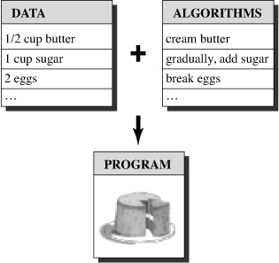
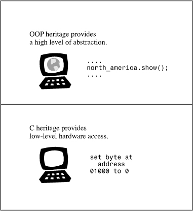
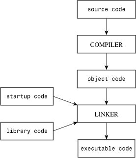
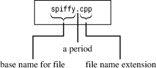
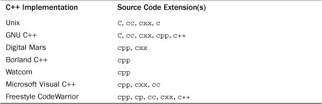

In this chapter you’ll learn about the following:
• The history and philosophy of C and of C++
• Procedural versus object-oriented programming
• How C++ adds object-oriented concepts to the C language
• How C++ adds generic programming concepts to the C language
• Programming language standards
• The mechanics of creating a program
Welcome to C++! This exciting language, which blends the C language with support for object-oriented programming and for generic programming, became one of the most important programming languages of the 1990s and continues strongly in the 2000s. Its C ancestry brings to C++ the tradition of an efficient, compact, fast, and portable language. Its object-oriented heritage brings C++ a fresh programming methodology, designed to cope with the escalating complexity of modern programming tasks. Its template features bring yet another new programming methodology: generic programming. This triple heritage is both a blessing and a bane. It makes the language very powerful, but it also means there’s a lot to learn.
This chapter explores C++’s background further and then goes over some of the ground rules for creating C++ programs. The rest of the book teaches you to use the C++ language, going from the modest basics of the language to the glory of object-oriented programming (OOP) and its supporting cast of new jargon—objects, classes, encapsulation, data hiding, polymorphism, and inheritance—and then on to its support of generic programming. (Of course, as you learn C++, these terms will be transformed from buzzwords to the necessary vocabulary of cultivated discourse.)
C++ joins three separate programming categories: the procedural language, represented by C; the object-oriented language, represented by the class enhancements C++ adds to C; and generic programming, supported by C++ templates. This chapter looks into those traditions. But first, let’s consider what this heritage implies about learning C++. One reason to use C++ is to avail yourself of its object-oriented features. To do so, you need a sound background in standard C, for that language provides the basic types, operators, control structures, and syntax rules. So if you already know C, you’re poised to learn C++. But it’s not just a matter of learning a few more keywords and constructs. Going from C to C++ involves perhaps more work than learning C in the first place. Also if you know C, you must unlearn some programming habits as you make the transition to C++. If you don’t know C, you have to master the C components, the OOP components, and the generic components to learn C++, but at least you may not have to unlearn programming habits. If you are beginning to think that learning C++ may involve some mind-stretching effort on your part, you’re right. This book will guide you through the process in a clear, helpful manner, one step at a time, so the mind-stretching will be sufficiently gentle to leave your brain resilient.
C++ Primer Plus approaches C++ by teaching both its C basis and its new components, so it assumes that you have no prior knowledge of C. You’ll start by learning the features C++ shares with C. Even if you know C, you may find this part of the book a good review. Also it points out concepts that will become important later, and it indicates where C++ differs from C. After you have a good grounding in the basics of C, you’ll learn about the C++ superstructure. At that point, you’ll learn about objects and classes and how C++ implements them. And you will learn about templates.
This book is not intended to be a complete C++ reference; it doesn’t explore every nook and cranny of the language. But you will learn most of the major features of the language, including templates, exceptions, and namespaces.
Now let’s take a brief look at some of C++’s background.
Computer technology has evolved at an amazing rate over the past few decades. Today a notebook computer can compute faster and store more information than the mainframe computers of the 1960s. (Quite a few programmers can recall bearing offerings of decks of punched cards to be submitted to a mighty, room-filling computer system with a majestic 100KB of memory—far less memory than even a smartphone uses today.) Computer languages have evolved, too. The changes may not be as dramatic, but they are important. Bigger, more powerful computers spawn bigger, more complex programs, which, in turn, raise new problems in program management and maintenance.
In the 1970s, languages such as C and Pascal helped usher in an era of structured programming, a philosophy that brought some order and discipline to a field badly in need of these qualities. Besides providing the tools for structured programming, C also produced compact, fast-running programs, along with the ability to address hardware matters, such as managing communication ports and disk drives. These gifts helped make C the dominant programming language in the 1980s. Meanwhile, the 1980s witnessed the growth of a new programming paradigm: object-oriented programming, or OOP, as embodied in languages such as SmallTalk and C++. Let’s examine these C and OOP a bit more closely.
In the early 1970s, Dennis Ritchie of Bell Laboratories was working on a project to develop the Unix operating system. (An operating system is a set of programs that manages a computer’s resources and handles its interactions with users. For example, it’s the operating system that puts the system prompt onscreen for a terminal-style interface that manages the windows and mice for graphical interfaces and that runs programs for you.) For this work Ritchie needed a language that was concise, that produced compact, fast programs, and that could control hardware efficiently.
Traditionally, programmers met these needs by using assembly language, which is closely tied to a computer’s internal machine language. However, assembly language is a low-level language—that is, it works directly with the hardware (for instance, accessing CPU registers and memory locations directly). Thus, assembly language is specific to a particular computer processor. So if you want to move an assembly program to a different kind of computer, you may have to completely rewrite the program, using a different assembly language. It was a bit as if each time you bought a new car, you found that the designers decided to change where the controls went and what they did, forcing you to relearn how to drive.
But Unix was intended to work on a variety of computer types (or platforms). That suggested using a high-level language. A high-level language is oriented toward problem solving instead of toward specific hardware. Special programs called compilers translate a high-level language to the internal language of a particular computer. Thus, you can use the same high-level language program on different platforms by using a separate compiler for each platform. Ritchie wanted a language that combined low-level efficiency and hardware access with high-level generality and portability. So building from older languages, he created C.
Because C++ grafts a new programming philosophy onto C, we should first take a look at the older philosophy that C follows. In general, computer languages deal with two concepts—data and algorithms. The data constitutes the information a program uses and processes. The algorithms are the methods the program uses (see Figure 1.1). Like most mainstream languages when C was created, C is a procedural language. That means it emphasizes the algorithm side of programming. Conceptually, procedural programming consists of figuring out the actions a computer should take and then using the programming language to implement those actions. A program prescribes a set of procedures for the computer to follow to produce a particular outcome, much as a recipe prescribes a set of procedures for a cook to follow to produce a cake.
Figure 1.1. Data + algorithms = program.

Earlier procedural languages, such as FORTRAN and BASIC, ran into organizational problems as programs grew larger. For example, programs often use branching statements, which route execution to one or another set of instructions, depending on the result of some sort of test. Many older programs had such tangled routing (called “spaghetti programming”) that it was virtually impossible to understand a program by reading it, and modifying such a program was an invitation to disaster. In response, computer scientists developed a more disciplined style of programming called structured programming. C includes features to facilitate this approach. For example, structured programming limits branching (choosing which instruction to do next) to a small set of well-behaved constructions. C incorporates these constructions (the for loop, the while loop, the do while loop, and the if else statement) into its vocabulary.
Top-down design was another of the new principles. With C, the idea is to break a large program into smaller, more manageable tasks. If one of these tasks is still too broad, you divide it into yet smaller tasks. You continue with this process until the program is compartmentalized into small, easily programmed modules. (Organize your study. Aargh! Well, organize your desk, your table top, your filing cabinet, and your bookshelves. Aargh! Well, start with the desk and organize each drawer, starting with the middle one. Hmmm, perhaps I can manage that task.) C’s design facilitates this approach, encouraging you to develop program units called functions to represent individual task modules. As you may have noticed, the structured programming techniques reflect a procedural mind-set, thinking of a program in terms of the actions it performs.
Although the principles of structured programming improved the clarity, reliability, and ease of maintenance of programs, large-scale programming still remains a challenge. OOP brings a new approach to that challenge. Unlike procedural programming, which emphasizes algorithms, OOP emphasizes the data. Rather than try to fit a problem to the procedural approach of a language, OOP attempts to fit the language to the problem. The idea is to design data forms that correspond to the essential features of a problem.
In C++, a class is a specification describing such a new data form, and an object is a particular data structure constructed according to that plan. For example, a class could describe the general properties of a corporation executive (name, title, salary, unusual abilities, for example), while an object would represent a specific executive (Guilford Sheepblat, vice president, $925,000, knows how to restore the Windows registry). In general, a class defines what data is used to represent an object and the operations that can be performed on that data. For example, suppose you were developing a computer drawing program capable of drawing a rectangle. You could define a class to describe a rectangle. The data part of the specification could include such things as the location of the corners, the height and width, the color and style of the boundary line, and the color and pattern used to fill the rectangle. The operations part of the specification could include methods for moving the rectangle, resizing it, rotating it, changing colors and patterns, and copying the rectangle to another location. If you then used your program to draw a rectangle, it would create an object according to the class specification. That object would hold all the data values describing the rectangle, and you could use the class methods to modify that rectangle. If you drew two rectangles, the program would create two objects, one for each rectangle.
The OOP approach to program design is to first design classes that accurately represent those things with which the program deals. For example, a drawing program might define classes to represent rectangles, lines, circles, brushes, pens, and the like. The class definitions, recall, include a description of permissible operations for each class, such as moving a circle or rotating a line. Then you would proceed to design a program, using objects of those classes. The process of going from a lower level of organization, such as classes, to a higher level, such as program design, is called bottom-up programming.
There’s more to OOP than the binding of data and methods into a class definition. For example, OOP facilitates creating reusable code, and that can eventually save a lot of work. Information hiding safeguards data from improper access. Polymorphism lets you create multiple definitions for operators and functions, with the programming context determining which definition is used. Inheritance lets you derive new classes from old ones. As you can see, OOP introduces many new ideas and involves a different approach to programming than does procedural programming. Instead of concentrating on tasks, you concentrate on representing concepts. Instead of taking a top-down programming approach, you sometimes take a bottom-up approach. This book will guide you through all these points, with plenty of easily grasped examples.
Designing a useful, reliable class can be a difficult task. Fortunately, OOP languages make it simple to incorporate existing classes into your own programming. Vendors provide a variety of useful class libraries, including libraries of classes designed to simplify creating programs for environments such as Windows or the Macintosh. One of the real benefits of C++ is that it lets you easily reuse and adapt existing, well-tested code.
Generic programming is yet another programming paradigm supported by C++. It shares with OOP the aim of making it simpler to reuse code and the technique of abstracting general concepts. But whereas OOP emphasizes the data aspect of programming, generic programming emphasizes independence from a particular data type. And its focus is different. OOP is a tool for managing large projects, whereas generic programming provides tools for performing common tasks, such as sorting data or merging lists. The term generic refers to code that is type independent. C++ data representations come in many types—integers, numbers with fractional parts, characters, strings of characters, and user-defined compound structures of several types. If, for example, you wanted to sort data of these various types, you would normally have to create a separate sorting function for each type. Generic programming involves extending the language so that you can write a function for a generic (that is, an unspecified) type once and use it for a variety of actual types. C++ templates provide a mechanism for doing that.
Like C, C++ began its life at Bell Labs, where Bjarne Stroustrup developed the language in the early 1980s. In Stroustrup’s own words, “C++ was designed primarily so that my friends and I would not have to program in assembler, C, or various modern high-level languages. Its main purpose was to make writing good programs easier and more pleasant for the individual programmer” (Bjarne Stroustrup, The C++ Programming Language, Third Edition. Reading, MA: Addison-Wesley, 1997).
Stroustrup was more concerned with making C++ useful than with enforcing particular programming philosophies or styles. Real programming needs are more important than theoretical purity in determining C++ language features. Stroustrup based C++ on C because of C’s brevity, its suitability to system programming, its widespread availability, and its close ties to the Unix operating system. C++’s OOP aspect was inspired by a computer simulation language called Simula67. Stroustrup added OOP features and generic programming support to C without significantly changing the C component. Thus C++ is a superset of C, meaning that any valid C program is a valid C++ program, too. There are some minor discrepancies but nothing crucial. C++ programs can use existing C software libraries. Libraries are collections of programming modules that you can call up from a program. They provide proven solutions to many common programming problems, thus saving you much time and effort. This has helped the spread of C++.
The name C++ comes from the C increment operator ++, which adds one to the value of a variable. Therefore, the name C++ correctly suggests an augmented version of C.
A computer program translates a real-life problem into a series of actions to be taken by a computer. The OOP aspect of C++ gives the language the ability to relate to concepts involved in the problem, and the C part of C++ gives the language the ability to get close to the hardware (see Figure 1.2). This combination of abilities has enabled the spread of C++. It may also involve a mental shift of gears as you turn from one aspect of a program to another. (Indeed, some OOP purists regard adding OOP features to C as being akin to adding wings to a pig, albeit a lean, efficient pig.) Also because C++ grafts OOP onto C, you can ignore C++’s object-oriented features. But you’ll miss a lot if that’s all you do.

Only after C++ achieved some success did Stroustrup add templates, enabling generic programming. And only after the template feature had been used and enhanced did it become apparent that templates were perhaps as significant an addition as OOP—or even more significant, some would argue. The fact that C++ incorporates both OOP and generic programming, as well as the more traditional procedural approach, demonstrates that C++ emphasizes the utilitarian over the ideological approach, and that is one of the reasons for the language’s success.
Say you’ve written a handy C++ program for the elderly Pentium PC computer running Windows 2000 at work, but management decides to replace the machine with a new computer using a different operating system, say Mac OS X or Linux, perhaps one with a different processor design, such as a SPARC processor. Can you run your program on the new platform? Of course you’ll have to recompile the program using a C++ compiler designed for the new platform. But will you have to make any changes to the code you wrote? If you can recompile the program without making changes and it runs without a hitch, we say the program is portable.
There are a couple obstacles to portability, the first of which is hardware. A program that is hardware specific is not likely to be portable. One that takes direct control of an IBM PC video board, for example, speaks gibberish as far as, say, a Sun is concerned. (You can minimize portability problems by localizing the hardware-dependent parts in function modules; then you just have to rewrite those specific modules.) We avoid that sort of programming in this book.
The second obstacle to portability is language divergence. Certainly, that can be a problem with spoken languages. A Yorkshireman’s description of the day’s events may not be portable to Brooklyn, even though English is said to be spoken in both areas. Computer languages, too, can develop dialects. Although most implementers would like to make their versions of C++ compatible with others, it’s difficult to do so without a published standard describing exactly how the language works. Therefore, the American National Standards Institute (ANSI) created a committee in 1990 (ANSI X3J16) to develop a standard for C++. (ANSI had already developed a standard for C.) The International Organization for Standardization (ISO) soon joined the process with its own committee (ISO-WG-21), creating a joint ANSI/ISO effort to develop the standard for C++.
Several years of work eventually led to the International Standard (ISO/IEC 14882:1998), which was adopted in 1998 by the ISO, the International Electrotechnical Commission (IEC), and ANSI. This standard, often called C++98, not only refined the description of existing C++ features but also extended the language with exceptions, runtime type identification (RTTI), templates, and the Standard Template Library (STL). The year 2003 brought the publication of the second edition of the C++ standard (ISO/IEC 14882:2003); the new edition is a technical revision, meaning that it tidies up the first edition—fixing typos, reducing ambiguities, and the like—but doesn’t change the language features. This edition often is called C++03. Because C++03 didn’t change language features, we’ll follow a common usage and use C++98 to refer to C++98/C++03.
C++ continues to evolve, and the ISO committee approved a new standard August 2011 titled ISO/IEC 14882:2011 and informally dubbed C++11. Like C++98, C++11 adds many features to the language. In addition, it has the goals of removing inconsistencies and of making C++ easier to learn and use. This standard had been dubbed C++0x, with the original expectation that x would be 7 or 8, but standards work is a slow, exhaustive, and exhausting process. Fortunately, it was soon realized that 0x could be a hexadecimal integer (see Appendix A, “Number Bases”), which meant the committee had until 2015 to finish the work. So by that measure, they have finished ahead of schedule.
The ISO C++ Standard additionally draws on the ANSI C Standard because C++ is supposed to be, as far as possible, a superset of C. That means that any valid C program ideally should also be a valid C++ program. There are a few differences between ANSI C and the corresponding rules for C++, but they are minor. Indeed, ANSI C incorporates some features first introduced in C++, such as function prototyping and the const type qualifier.
Prior to the emergence of ANSI C, the C community followed a de facto standard based on the book The C Programming Language, by Kernighan and Ritchie (Addison-Wesley Publishing Company, Reading, MA, 1978). This standard was often termed K&R C; with the emergence of ANSI C, the simpler K&R C is now sometimes called classic C.
The ANSI C Standard not only defines the C language, it also defines a standard C library that ANSI C implementations must support. C++ also uses that library; this book refers to it as the standard C library or the standard library. In addition, the ISO C++ standard provides a standard library of C++ classes.
The C Standard was last revised as C99, which was adopted by the ISO in 1999 and ANSI in 2000. This standard adds some features to C, such as a new integer type, that some C++ compilers support.
Originally, the de facto standard for C++ was a 65-page reference manual included in the 328-page The C++ Programming Language, by Stroustrup (Addison-Wesley, 1986).
The next major published de facto standard was The Annotated C++ Reference Manual, by Ellis and Stroustrup (Addison-Wesley, 1990). This is a 453-page work; it includes substantial commentary in addition to reference material.
The C++98 standard, with the addition of many features, reached nearly 800 pages, even with only minimal commentary.
The C++11 standard is over 1,350 pages long, so it augments the old standard substantially.
Contemporary compilers provide good support for C++98. Some compilers at the time of this writing also support some C++11 features, and we can expect the level of support to increase quickly after the new standard is adopted. This book reflects the current situation, covering C++98 pretty thoroughly and introducing several C++11 features. Some of these features are integrated with the coverage of related C++98 topics. Chapter 18, “Visiting with the New C++ Standard,” concentrates on the new features, summarizing the ones mentioned earlier in the book and presenting additional features.
With the incomplete support available at the time of this writing, it would be very difficult to cover adequately all the new C++11 features. But even when the new standard is completely supported, it’s clear that comprehensive coverage would be beyond the scope of any reasonably sized single volume book. This book takes the approach of concentrating on features that are already available on some compilers and briefly summarizing many of the other features.
Before getting to the C++ language proper, let’s cover some of the groundwork related to creating programs.
Suppose you’ve written a C++ program. How do you get it running? The exact steps depend on your computer environment and the particular C++ compiler you use, but they should resemble the following steps (see Figure 1.3):
1. Use a text editor of some sort to write the program and save it in a file. This file constitutes the source code for your program.
2. Compile the source code. This means running a program that translates the source code to the internal language, called machine language, used by the host computer. The file containing the translated program is the object code for your program.
3. Link the object code with additional code. For example, C++ programs normally use libraries. A C++ library contains object code for a collection of computer routines, called functions, to perform tasks such as displaying information onscreen or calculating the square root of a number. Linking combines your object code with object code for the functions you use and with some standard startup code to produce a runtime version of your program. The file containing this final product is called the executable code.
Figure 1.3. Programming steps.

You will encounter the term source code throughout this book, so be sure to file it away in your personal random-access memory.
Most of the programs in this book are generic and should run in any system that supports C++98. However, some, particularly those in Chapter 18, do require some C++11 support. At the time of this writing, some compilers require additional flags to activate their partial C++11 support. For instance, g++, beginning with version 4.3, currently uses the –std=c++11 flag when compiling a source code file:
g++ -std=c++11 use_auto.cpp
The steps for putting together a program may vary. Let’s look a little further at these steps.
The rest of the book deals with what goes into a source file; this section discusses the mechanics of creating one. Some C++ implementations, such as Microsoft Visual C++, Embarcadero C++ Builder, Apple Xcode, Open Watcom C++, Digital Mars C++, and Freescale CodeWarrior, provide integrated development environments (IDEs) that let you manage all steps of program development, including editing, from one master program. Other implementations, such as GNU C++ on Unix and Linux, IBM XL C/C++ on AIX, and the free versions of the Borland 5.5 (distributed by Embarcadero) and Digital Mars compilers, just handle the compilation and linking stages and expect you to type commands on the system command line. In such cases, you can use any available text editor to create and modify source code. On a Unix system, for example, you can use vi or ed or ex or emacs. On a Windows system running in the Command Prompt mode you can use edlin or edit or any of several available program editors. You can even use a word processor, provided that you save the file as a standard ASCII text file instead of in a special word processor format. Alternatively, there may be IDE options for use with these command-line compilers.
In naming a source file, you must use the proper suffix to identify the file as a C++ file. This not only tells you that the file is C++ source code, it tells the compiler that, too. (If a Unix compiler complains to you about a “bad magic number,” that’s just its endearingly obscure way of saying that you used the wrong suffix.) The suffix consists of a period followed by a character or group of characters called the extension (see Figure 1.4).
Figure 1.4. The parts of a source code filename.

The extension you use depends on the C++ implementation. Table 1.1 shows some common choices. For example, spiffy.C is a valid Unix C++ source code filename. Note that Unix is case sensitive, meaning you should use an uppercase C character. Actually, a lowercase c extension also works, but standard C uses that extension. So to avoid confusion on Unix systems, you should use c with C programs and C with C++ programs. If you don’t mind typing an extra character or two, you can also use the cc and cxx extensions with some Unix systems. DOS, being a bit simple-minded compared to Unix, doesn’t distinguish between uppercase and lowercase, so DOS implementations use additional letters, as shown in Table 1.1, to distinguish between C and C++ programs.
Table 1.1. Source Code Extensions

Originally, Stroustrup implemented C++ with a C++-to-C compiler program instead of developing a direct C++-to-object code compiler. This program, called cfront (for C front end), translated C++ source code to C source code, which could then be compiled by a standard C compiler. This approach simplified introducing C++ to the C community. Other implementations have used this approach to bring C++ to other platforms. As C++ has developed and grown in popularity, more and more implementers have turned to creating C++ compilers that generate object code directly from C++ source code. This direct approach speeds up the compilation process and emphasizes that C++ is a separate, if similar, language.
The mechanics of compiling depend on the implementation, and the following sections outline a few common forms. These sections outline the basic steps, but they are no substitute for consulting the documentation for your system.
Originally, the Unix CC command invoked cfront. However, cfront didn’t keep pace with the evolution of C++, and its last release was in 1993. These days a Unix computer instead might have no compiler, a proprietary compiler, or a third-party compiler, perhaps commercial, perhaps freeware, such as the GNU g++ compiler. In many of these other cases (but not in the no-compiler case!), the CC command still works, with the actual compiler being invoked differing from system to system. For simplicity, we’ll assume that CC is available, but realize that you might have to substitute a different command for CC in the following discussion.
You use the CC command to compile your program. The name is in uppercase letters to distinguish it from the standard Unix C compiler cc. The CC compiler is a command-line compiler, meaning you type compilation commands on the Unix command line.
For example, to compile the C++ source code file spiffy.C, you would type this command at the Unix prompt:
CC spiffy.C
If, through skill, dedication, or luck, your program has no errors, the compiler generates an object code file with an o extension. In this case, the compiler produces a file named spiffy.o.
Next, the compiler automatically passes the object code file to the system linker, a program that combines your code with library code to produce the executable file. By default, the executable file is called a.out. If you used just one source file, the linker also deletes the spiffy.o file because it’s no longer needed. To run the program, you just type the name of the executable file:
a.out
Note that if you compile a new program, the new a.out executable file replaces the previous a.out. (That’s because executable files take a lot of space, so overwriting old executable files helps reduce storage demands.) But if you develop an executable program you want to keep, you just use the Unix mv command to change the name of the executable file.
In C++, as in C, you can spread a program over more than one file. (Many of the programs in this book in Chapters 8 through 16 do this.) In such a case, you can compile a program by listing all the files on the command line, like this:
CC my.C precious.C
If there are multiple source code files, the compiler does not delete the object code files. That way, if you just change the my.C file, you can recompile the program with this command:
CC my.C precious.o
This recompiles the my.C file and links it with the previously compiled precious.o file.
You might have to identify some libraries explicitly. For example, to access functions defined in the math library, you may have to add the -lm flag to the command line:
CC usingmath.C -lm
Linux systems most commonly use g++, the GNU C++ compiler from the Free Software Foundation. The compiler is included in most Linux distributions, but it may not always be installed. The g++ compiler works much like the standard Unix compiler. For example, the following produces an executable file call a.out:
g++ spiffy.cxx
Some versions might require that you link in the C++ library:
g++ spiffy.cxx -lg++
To compile multiple source files, you just list them all in the command line:
g++ my.cxx precious.cxx
This produces an executable file called a.out and two object code files, my.o and precious.o. If you subsequently modify just one of the source code files, say my.cxx, you can recompile by using my.cxx and the precious.o:
g++ my.cxx precious.o
The GNU compiler is available for many platforms, including the command-line mode for Windows-based PCs as well as for Unix systems on a variety of platforms.
An inexpensive route for compiling C++ programs on a Windows PC is to download a free command-line compiler that runs in Windows Command Prompt mode, which opens an MS-DOS-like window. Free Windows downloads that include the GNU C++ compiler are Cygwin and MinGW; they use g++ as the compiler name.
To use the g++ compiler, you first open a command prompt window. Cygwin and MinGW do this for you automatically when you start those programs. To compile a source code file named great.cpp, you type the following command at the prompt:
g++ great.cpp
If the program compiles successfully, the resultant executable file is named a.exe.
Windows products are too abundant and too often revised to make it reasonable to describe them all individually. At the present the most popular is Microsoft Visual C++ 2010, which is available in the free Microsoft Visual C++ 2010 Express edition. The Wikipedia link (http://en.wikipedia.org/wiki/List_of_compilers) provides a comprehensive list of compilers for many platforms, including Windows. Despite different designs and goals, most Windows-based C++ compilers share some common features.
Typically, you must create a project for a program and add to the project the file or files constituting the program. Each vendor supplies an IDE with menu options and, possibly, automated assistance, in creating a project. One very important matter you have to establish is the kind of program you’re creating. Typically, the compiler offers many choices, such as a Windows application, an MFC Windows application, a dynamic link library, an ActiveX control, a DOS or character-mode executable, a static library, or a console application. Some of these may be available in both 64-bit and 32-bit versions.
Because the programs in this book are generic, you should avoid choices that require platform-specific code, such as Windows applications. Instead, you want to run in a character-based mode. The choice depends on the compiler. In general, you should look to see if there is an option labeled Console, character-mode, or DOS executable and try that. For instance, in Microsoft Visual C++ 2010, select the Win32 Console Application option, click Application Settings, and select the Empty Project option. In C++Builder XE, select Console Application under C++Builder Projects.
After you have the project set up, you have to compile and link your program. The IDE typically gives you several choices, such as Compile, Build, Make, Build All, Link, Execute, Run, and Debug (but not necessarily all these choices in the same IDE!):
• Compile typically means compile the code in the file that is currently open.
• Build or Make typically means compile the code for all the source code files in the project. This is often an incremental process. That is, if the project has three files, and you change just one, and then just that one is recompiled.
• Build All typically means compile all the source code files from scratch.
• As described earlier, Link means combine the compiled source code with the necessary library code.
• Run or Execute means run the program. Typically, if you have not yet done the earlier steps, Run does them before trying to run a program.
• Debug means run the program with the option of going through step-by-step.
• A compiler may offer the option of Debug and Release versions. The former contains extra code that increases the program size, slows program execution, but enables detailed debugging features.
A compiler generates an error message when you violate a language rule and identifies the line that has the problem. Unfortunately, when you are new to a language, you may find it difficult to understand the message. Sometimes the actual error may occur before the identified line, and sometimes a single error generates a chain of error messages.
When fixing errors, fix the first error first. If you can’t find it on the line identified as the line with the error, check the preceding line.
Be aware of the fact that a particular compiler accepts a program doesn’t necessarily mean that the program is valid C++. And the fact that a particular compiler rejects a program doesn’t necessarily mean that the program is invalid C++. However, current compilers are more compliant with the Standard than their predecessors of a few years ago. Also compilers typically have options to control how strict the compiler is.
Occasionally, compilers get confused after incompletely building a program and respond by giving meaningless error messages that cannot be fixed. In such cases, you can clear things up by selecting Build All to restart the process from scratch. Unfortunately, it is difficult to distinguish this situation from the more common one in which the error messages merely seem to be meaningless.
Usually, the IDE lets you run the program in an auxiliary window. Some IDEs close the window as soon as the program finishes execution, and some leave it open. If your compiler closes the window, you’ll have a hard time seeing the output unless you have quick eyes and a photographic memory. To see the output, you must place some additional code at the end of the program:
cin.get(); // add this statement
cin.get(); // and maybe this, too
return 0;
}
The cin.get() statement reads the next keystroke, so this statement causes the program to wait until you press the Enter key. (No keystrokes get sent to a program until you press Enter, so there’s no point in pressing another key.) The second statement is needed if the program otherwise leaves an unprocessed keystroke after its regular input. For example, if you enter a number, you type the number and then press Enter. The program reads the number but leaves the Enter keystroke unprocessed, and it is then read by the first cin.get().
Apple currently supplies a developer framework called Xcode with the Mac OS X operating system. It’s free but normally not preinstalled. You can install it from the operating system installation disks, or you can download it for a nominal fee from Apple. (Be aware that it is over a 4GB download.) Not only does it provide an IDE that supports several programming languages, it also installs a couple of compilers—g++ and clang—that can be used as command-line programs in the Unix mode accessible through the Terminal utility.
For IDEs: To save time, you can use just one project for all the sample programs. Just delete the previous sample source code file from the project list and add the current source code. This saves time, effort, and lessens disk clutter.
As computers have grown more powerful, computer programs have become larger and more complex. In response to these conditions, computer languages have evolved so that it’s easier to manage the programming process. The C language incorporated features such as control structures and functions to better control the flow of a program and to enable a more structured, modular approach. To these tools C++ adds support for object-oriented programming and generic programming. This enables even more modularity and facilitates the creation of reusable code, which saves time and increases program reliability.
The popularity of C++ has resulted in a large number of implementations for many computing platforms; the C++ ISO standards (C++98/03 and C++11) provide a basis for keeping these many implementations mutually compatible. The standards establishes the features the language should have, the behavior the language should display, and a standard library of functions, classes, and templates. The standards supports the goal of a portable language across different computing platforms and different implementations of the language.
To create a C++ program, you create one or more source files containing the program as expressed in the C++ language. These are text files that must be compiled and linked to produce the machine-language files that constitute executable programs. These tasks are often accomplished in an IDE that provides a text editor for creating the source files, a compiler and a linker for producing executable files, and other resources, such as project management and debugging capabilities. But the same tasks can also be performed in a command-line environment by invoking the appropriate tools individually.